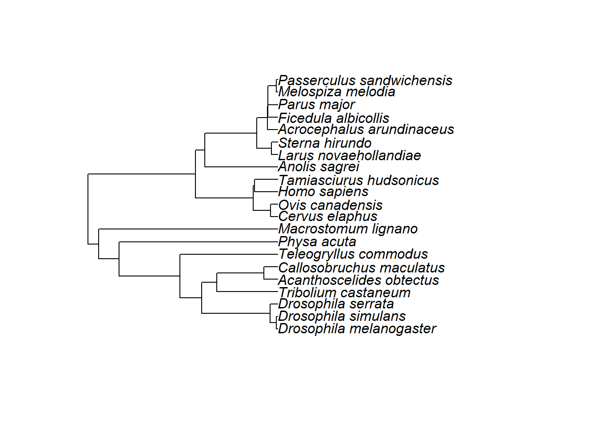

Stronger net selection on males across animals
Supplementary material reporting R code
Lennart Winkler1, Maria Moiron2, Edward H. Morrow3 and Tim Janicke1,2
1Applied Zoology, Technical University Dresden
2Centre d’Écologie Fonctionnelle et Évolutive, UMR 5175, CNRS, Université de Montpellier 3Department for Environmental and Life Sciences, Karlstad University
Last updated: 2021-06-14
Checks: 5 2
Knit directory: Net_Selection_eLife_code/
This reproducible R Markdown analysis was created with workflowr (version 1.6.2). The Checks tab describes the reproducibility checks that were applied when the results were created. The Past versions tab lists the development history.
The R Markdown file has unstaged changes. To know which version of the R Markdown file created these results, you’ll want to first commit it to the Git repo. If you’re still working on the analysis, you can ignore this warning. When you’re finished, you can run wflow_publish to commit the R Markdown file and build the HTML.
Great job! The global environment was empty. Objects defined in the global environment can affect the analysis in your R Markdown file in unknown ways. For reproduciblity it’s best to always run the code in an empty environment.
The command set.seed(20210613) was run prior to running the code in the R Markdown file. Setting a seed ensures that any results that rely on randomness, e.g. subsampling or permutations, are reproducible.
Great job! Recording the operating system, R version, and package versions is critical for reproducibility.
Nice! There were no cached chunks for this analysis, so you can be confident that you successfully produced the results during this run.
Using absolute paths to the files within your workflowr project makes it difficult for you and others to run your code on a different machine. Change the absolute path(s) below to the suggested relative path(s) to make your code more reproducible.
| absolute | relative |
|---|---|
| C:/Users/lenna/Desktop/Documents/PhD/2020_META SexSpecGenVar/eLife/Net_Selection_eLife_code/data/META_SexSpecGenVar_Data_v23.csv | data/META_SexSpecGenVar_Data_v23.csv |
| C:/Users/lenna/Desktop/Documents/PhD/2020_META SexSpecGenVar/eLife/Net_Selection_eLife_code/data/META_SexSpecGenVar_Pylogeny_v05_NEWICK.txt | data/META_SexSpecGenVar_Pylogeny_v05_NEWICK.txt |
Great! You are using Git for version control. Tracking code development and connecting the code version to the results is critical for reproducibility.
The results in this page were generated with repository version 9e111f7. See the Past versions tab to see a history of the changes made to the R Markdown and HTML files.
Note that you need to be careful to ensure that all relevant files for the analysis have been committed to Git prior to generating the results (you can use wflow_publish or wflow_git_commit). workflowr only checks the R Markdown file, but you know if there are other scripts or data files that it depends on. Below is the status of the Git repository when the results were generated:
Ignored files:
Ignored: .Rhistory
Untracked files:
Untracked: analysis/docs/.nojekyll
Untracked: analysis/docs/about.html
Untracked: analysis/docs/license.html
Untracked: analysis/docs/site_libs/
Untracked: data/META_SexSpecGenVar_Data_v23.csv
Untracked: data/META_SexSpecGenVar_Pylogeny_v05_NEWICK.txt
Unstaged changes:
Modified: analysis/_site.yml
Modified: analysis/index.Rmd
Note that any generated files, e.g. HTML, png, CSS, etc., are not included in this status report because it is ok for generated content to have uncommitted changes.
These are the previous versions of the repository in which changes were made to the R Markdown (analysis/index.Rmd) and HTML (docs/index.html) files. If you’ve configured a remote Git repository (see ?wflow_git_remote), click on the hyperlinks in the table below to view the files as they were in that past version.
| File | Version | Author | Date | Message |
|---|---|---|---|---|
| html | 01525f8 | LennartWinkler | 2021-06-13 | Build site. |
| Rmd | 161eee9 | LennartWinkler | 2021-06-13 | wflow_publish(“C:/Users/lenna/Desktop/Documents/PhD/2020_META SexSpecGenVar/eLife/Net_Selection_eLife_code/analysis/index.Rmd”) |
| html | 6f60c27 | LennartWinkler | 2021-06-13 | Build site. |
| Rmd | 555a290 | LennartWinkler | 2021-06-13 | wflow_publish(“C:/Users/lenna/Documents/Net_Selection_eLife_code/analysis/index.Rmd”) |
| html | 9220292 | LennartWinkler | 2021-06-13 | Build site. |
| Rmd | 15f14fe | LennartWinkler | 2021-06-13 | wflow_publish(“C:/Users/lenna/Documents/Net_Selection_eLife_code/analysis/index.Rmd”) |
| html | db2f16f | LennartWinkler | 2021-06-13 | Build site. |
| Rmd | 00738af | LennartWinkler | 2021-06-13 | wflow_publish(“C:/Users/lenna/Documents/Net_Selection_eLife_code/analysis/index.Rmd”) |
| html | 7d5ef2c | LennartWinkler | 2021-06-13 | Build site. |
| Rmd | 320011b | LennartWinkler | 2021-06-13 | Start workflowr project. |
Supplementary material reporting R code for the manuscript ‘Stronger net selection on males across animals’.
Phenotypic gambit
Statistical analyses were carried out in two steps. First, we examined the key assumption of the ‘phenotypic gambit’ by testing whether estimates of phenotypic variance predict the estimated genetic variance. For this we computed the Pearson correlation coefficient r, testing the relationship between CVP and CVG for both sexes and the two fitness components separately. In addition, we tested whether the sex bias in CVP translates into a sex bias in CVG by correlating the coefficient of variation ratio lnCVR (Nakagawa et al. 2015), which refers to the ln-transformed ratio of male CV to female CV, with positive values indicating a male bias. The analyses on the phenotypic gambit were motivated from a methodological perspective and we did not expect that inter-specific variation in the difference between CVP and CVG can be explained by a shared phylogenetic history. However, for completeness, we also ran correlations on phylogenetic independent contrasts (PICs; computed using the ape R-package (version 5.4.1) in R (Paradis & Schliep 2019)) to test whether our findings were robust when accounting for potential phylogenetic non-independence. We report Pearson’s correlation coefficients r for normally distributed data and Spearman’s rho if assumptions of normality were violated.
Load and prepare data
# load packages
rm(list = ls())
library(ape);library(metafor); library(Matrix); library(MASS); library(pwr);library(multcomp);library(psych);library(outliers)
library(matrixcalc)
library(PerformanceAnalytics)
library(tidyr)
library(MCMCglmm)
library(matrixcalc)
library(dplyr)
library(stargazer)
library(data.table)
library(ggplot2)First, the code to load and organize the data.
# load and organize data
Data <- read.csv("C:/Users/lenna/Desktop/Documents/PhD/2020_META SexSpecGenVar/eLife/Net_Selection_eLife_code/data/META_SexSpecGenVar_Data_v23.csv", sep=",", header=TRUE,fileEncoding="UTF-8-BOM")
theTree <- read.tree("C:/Users/lenna/Desktop/Documents/PhD/2020_META SexSpecGenVar/eLife/Net_Selection_eLife_code/data/META_SexSpecGenVar_Pylogeny_v05_NEWICK.txt")
stacked_gen_Data <- gather(Data, key = "Sex",value = "genCV", genCV_male, genCV_female)
stacked_phen_Data <- gather(Data, key = "Sex",value = "phenCV", phenCV_male, phenCV_female)Subsetting the dataset into different fitness categories.
MCMC APPROACH - Reproductive Success
# Prune phylogenetic tree to data subset
RS_gen_metaData$animal <- factor(RS_gen_metaData$animal)
RS_Species_Data <- unique(RS_gen_metaData$animal)
summary(RS_Species_Data)
RS_theTree<-drop.tip(theTree, theTree$tip.label[-na.omit(match(RS_Species_Data, theTree$tip.label))])
plot(RS_theTree)
#Check phylogenetic tree
sort(RS_theTree$tip.label) == sort(unique(RS_gen_metaData$animal)) # check if tip names correspond to data names
is.ultrametric(RS_theTree) # check if BL are aligned contemporaneously
isSymmetric(vcv(RS_theTree, corr=TRUE)) # check symmetry of phylogenetic correlation matrix
rawC <- vcv(RS_theTree, corr=TRUE)
is.positive.definite(rawC) # if FALSE will have to force symmetry
forcedC <- as.matrix(forceSymmetric(vcv(RS_theTree, corr=TRUE)))
is.positive.definite(forcedC)
comparedC <- rawC == forcedC
rawC[cbind(which(comparedC!=TRUE, arr.ind = T))] - forcedC[cbind(which(comparedC!=TRUE, arr.ind = T))] < 1e-5# Run MCMC models for reproductive success
pr<-list(R=list(V=1,nu=0.002), G=list(G1=list(V=1,nu=0.002),
G2=list(V=1,nu=0.002),
G3=list(V=1,nu=0.002)))
BURNIN = 1000000
NITT = 11000000
THIN = 500
BURNIN = 100000
NITT = 1100000
THIN = 500
names(RS_phen_metaData)
RS_phen_metaData$Index <- as.factor(RS_phen_metaData$Index)
RS_phen_metaData$Study_ID <- as.factor(RS_phen_metaData$Study_ID)
RS_phen_MCMC_model <- MCMCglmm(phenCV~factor(Sex),random=~animal + Index + Study_ID,
pedigree=RS_theTree,
prior=pr,
data=RS_phen_metaData,
pr = TRUE,
burnin = BURNIN,
nitt=NITT,
thin=THIN)# Model summaries for MCMC models on reproductive success
# Model output: phenotypic variance in reproductive success
summary(RS_phen_MCMC_model)
Iterations = 100001:1099501
Thinning interval = 500
Sample size = 2000
DIC: 50.043
G-structure: ~animal
post.mean l-95% CI u-95% CI eff.samp
animal 0.02255 0.0002015 0.07153 2000
~Index
post.mean l-95% CI u-95% CI eff.samp
Index 0.06268 0.002205 0.1299 2000
~Study_ID
post.mean l-95% CI u-95% CI eff.samp
Study_ID 0.05648 0.0003111 0.144 2000
R-structure: ~units
post.mean l-95% CI u-95% CI eff.samp
units 0.0598 0.03933 0.08289 2241
Location effects: phenCV ~ factor(Sex)
post.mean l-95% CI u-95% CI eff.samp pMCMC
(Intercept) 0.6941 0.4875 0.8888 2000 <5e-04 ***
factor(Sex)phenCV_male 0.2329 0.1500 0.3183 2000 <5e-04 ***
---
Signif. codes: 0 '***' 0.001 '**' 0.01 '*' 0.05 '.' 0.1 ' ' 1#summary(RS_phen_MatSyst_MCMC_model)
#summary(RS_phen_StudyType_MCMC_model)
#summary(RS_phen_SSD_MCMC_model)
#summary(RS_phen_SexualDimorphism_MCMC_model)
#summary(RS_phen_BreedingDesign_MCMC_model)
#summary(RS_gen_MCMC_model)
#summary(RS_gen_MatSyst_MCMC_model)
#summary(RS_gen_StudyType_MCMC_model)
#summary(RS_gen_SSD_MCMC_model)
#summary(RS_gen_SexualDimorphism_MCMC_model)
#summary(RS_gen_BreedingDesign_MCMC_model)Including Plots
You can also embed plots, for example:

Note that the echo = FALSE parameter was added to the code chunk to prevent printing of the R code that generated the plot.
R version 4.0.0 (2020-04-24)
Platform: x86_64-w64-mingw32/x64 (64-bit)
Running under: Windows 10 x64 (build 19041)
Matrix products: default
locale:
[1] LC_COLLATE=German_Germany.1252 LC_CTYPE=German_Germany.1252
[3] LC_MONETARY=German_Germany.1252 LC_NUMERIC=C
[5] LC_TIME=German_Germany.1252
attached base packages:
[1] stats graphics grDevices utils datasets methods base
other attached packages:
[1] ggplot2_3.3.3 data.table_1.14.0
[3] stargazer_5.2.2 dplyr_1.0.5
[5] MCMCglmm_2.32 coda_0.19-4
[7] tidyr_1.1.3 PerformanceAnalytics_2.0.4
[9] xts_0.12.1 zoo_1.8-9
[11] matrixcalc_1.0-3 outliers_0.14
[13] psych_2.1.3 multcomp_1.4-16
[15] TH.data_1.0-10 survival_3.1-12
[17] mvtnorm_1.1-1 pwr_1.3-0
[19] MASS_7.3-51.5 metafor_2.4-0
[21] Matrix_1.2-18 ape_5.4-1
[23] workflowr_1.6.2
loaded via a namespace (and not attached):
[1] Rcpp_1.0.6 lattice_0.20-41 corpcor_1.6.9 assertthat_0.2.1
[5] rprojroot_2.0.2 digest_0.6.27 utf8_1.2.1 R6_2.5.0
[9] evaluate_0.14 highr_0.8 pillar_1.5.1 rlang_0.4.10
[13] cubature_2.0.4.1 whisker_0.4 rmarkdown_2.7 splines_4.0.0
[17] stringr_1.4.0 munsell_0.5.0 compiler_4.0.0 httpuv_1.6.1
[21] xfun_0.22 pkgconfig_2.0.3 mnormt_2.0.2 tmvnsim_1.0-2
[25] htmltools_0.5.1.1 tidyselect_1.1.0 tibble_3.1.0 tensorA_0.36.2
[29] quadprog_1.5-8 codetools_0.2-16 fansi_0.4.2 withr_2.4.1
[33] crayon_1.4.1 later_1.2.0 grid_4.0.0 gtable_0.3.0
[37] nlme_3.1-147 lifecycle_1.0.0 DBI_1.1.1 git2r_0.28.0
[41] magrittr_2.0.1 scales_1.1.1 stringi_1.5.3 fs_1.5.0
[45] promises_1.2.0.1 ellipsis_0.3.1 vctrs_0.3.6 generics_0.1.0
[49] sandwich_3.0-0 tools_4.0.0 glue_1.4.2 purrr_0.3.4
[53] parallel_4.0.0 yaml_2.2.1 colorspace_2.0-0 knitr_1.31